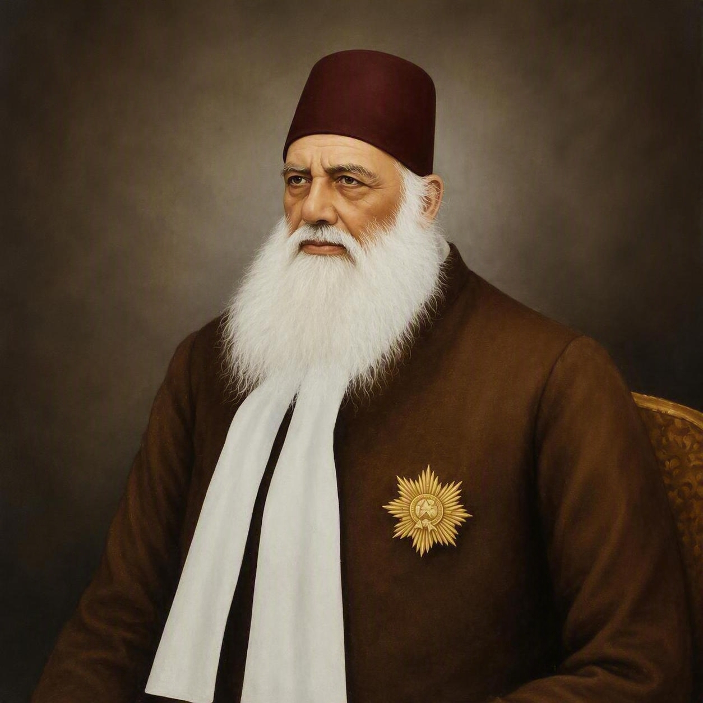

1
President
Committee member name
Welcome to our alumni community
Connecting alumni, preserving our shared legacy and creating opportunities for generations of AMU graduates across Victoria.

Our heritage
Aligarh Muslim University Alumni Victoria brings together AMU graduates, former students, families and friends living across Victoria. We reconnect alumni, share knowledge, welcome new arrivals and contribute to the wider community.
Guided by education, social responsibility, mutual respect and service, our community honours its heritage while building a forward-looking network in Australia.
Leadership
A volunteer committee supporting the association's purpose, programs and community.
Committee member name
Committee member name
Committee member name
Committee member name
What's on
Reconnect with old friends, meet new members and participate in professional, cultural and community activities.
An evening celebrating the educational vision and enduring legacy of AMU's founder.
Event details →Meet alumni across industries, exchange ideas and build meaningful professional connections.
Event details →A relaxed community gathering for alumni, families, students and friends of AMU.
Event details →Community moments
A visual journey from historic Aligarh to our alumni community in Victoria.
Membership
Stay connected to people, opportunities, events and initiatives that carry the AMU spirit forward in Victoria.
Build lasting personal and professional relationships across Victoria.
Support students, new graduates and newly arrived alumni.
Take part in educational, cultural and community initiatives.
Celebrate shared heritage in a welcoming local community.
Enter your email and our membership team can contact you with the next steps.
Contact Us
Have a membership question, an event idea or an opportunity for the community? We would love to hear from you.